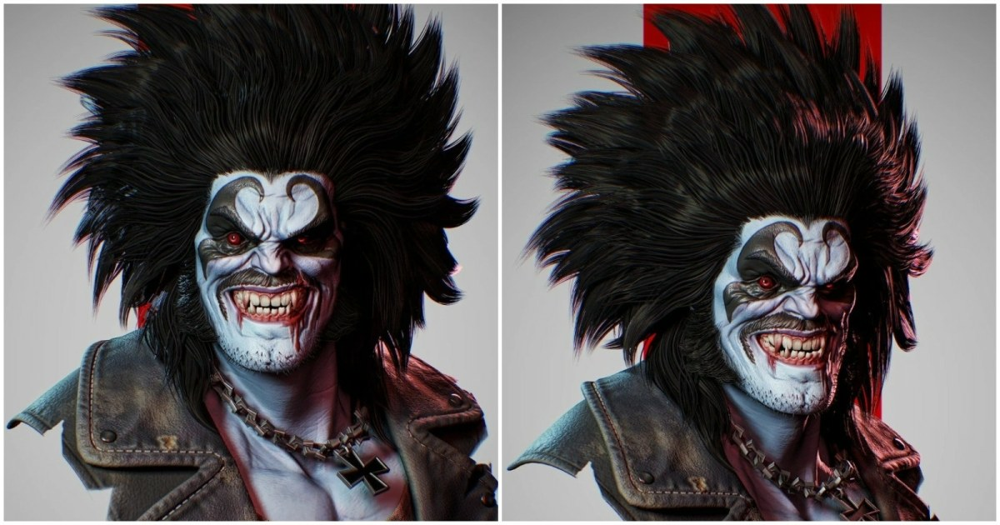

Lobo 半寫實胸像：從 ZBrush 重拓撲、Painter 手繪破損到 Marmoset 四燈布光
角色美術 Eric Liu 分享 Lobo 胸像流程：以 ZBrush 建形並整理 Edge Flow、Marmoset 烘焙多組貼圖、Substance 3D Painter 疊色與補畫衣物破損，最後在 Marmoset Toolbag 完成布光。

Substance ★★★★☆
完整分析
雕刻與貼圖技術流程
模型由球體起形，完成造型後多次 ZRemesh，再以 ZWrap 基礎網格投射頭部細節、ZModeler 整理服裝拓撲；UV 在 Maya 處理，烘焙 Curvature、Cavity、AO、Position、Normal 等貼圖後送入 Painter。
材質與燈光製作影響
臉部以灰階底層、AO Multiply、亮部 Overlay 再疊加局部紫、綠、黃膚色；衣物破損不足時以負 Height 與手繪陰影補出假深度。渲染以主光、補光及兩盞輪廓光建立體積與剪影。
造型限制與待驗證
作者指出缺少完整角色概念，必須依參考測試多種表情；衣物高模未先做足損傷，也把額外修補壓到 Painter。此為個人胸像流程，未提供遊戲引擎內材質與效能驗證。
BRIEF｜來源已驗證；證據深度較有限，完整分析會明確區分已知資訊與待驗證事項。